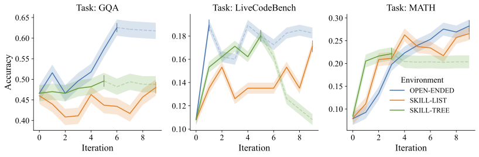

Overview of DataEnvGym, a novel testbed for data generation agents. The environment(left) consists of (a) evaluation and (d) training of the student model. The data generation agent(right) takes a state encoding the current student model's performance and provides training data
to improve the student model, by first creating a plan through the (b) data generation policy, then
executing the plan via the (c) data generation engine.
Abstract
The process of creating training data to teach models is currently driven by humans, who manually analyze model weaknesses and plan how to create data that improves a student model.
Recent approaches using large language models (LLMs) as annotators reduce human annotation effort, but still require humans to interpret feedback from evaluations and control the LLM to produce data the student needs.
Automating this labor-intensive process by creating autonomous data generation agents -- or teachers -- is desirable, but requires environments that can simulate the feedback-driven, iterative, closed loop of data creation.
To enable rapid and scalable testing for such agents and their modules,
we introduce DataEnvGym, a testbed of teacher environments for data generation agents.
DataEnvGym frames data generation as a
sequential decision-making task,
involving an agent consisting of a data generation policy (which generates a plan for creating training data) and a data generation engine (which transforms the plan into data), inside an environment that provides feedback from a student.
The agent's end goal is to improve student model performance.
Students are iteratively trained and evaluated on generated data,
with their feedback (in the form of errors or weak skills) being reported to the agent after each iteration.
As a general-purpose testbed, DataEnvGym includes multiple instantiations of teacher environments across three levels of structure in the state representation and action space, with varying levels of scaffolding support.
More structured environments are based on automatically-inferred skills and offer a higher degree of interpretability and control over the curriculum.
We support developing and testing data generation agents in four
diverse tasks covering text, images, and actions (mathematics, programming, visual question answering, and tool-use) and test multiple student and teacher models.
We find that example agents in our teaching environments can iteratively improve students across diverse tasks and settings.
Moreover, we show that environments can teach different skill levels and can be used to test variants of key modules, pointing to directions of future work in improving data generation agents, engines, and feedback mechanisms.
Key Features
Build data generation agents that can automatically create data to improve a student model
Modular environments that support diverse tasks: mathematics (MATH), programming (LiveCodeBench), visual question answering (GQA, NaturalBench), and tool use (MnMs)
Baseline implementations of data generation agents for each of the above tasks
Fully typed codebase
Integration with vLLM and Ray for fast, parallel inference
Figure 1: Illustration of the three example instances of DataEnvGym environments.
DataEnvGym provides three categories of (environment, agent) pairs with varying levels of structure and interpretability:
Open-Ended Environment: The state is represented as a list of per-example accuracies, and the data generation plan directly creates a data generation plan from them.
Skill-List Environment: The state is represented as a categorized list of skills and per-skill student model performance. Its data generation plan allows the policy to prioritize weak skills.
Skill-Tree Environment: The state is represented as a forest of skill trees containing skill-subskill relational information. Its data generation policy chooses between two actions for each skill: explore (grow skill tree) and exploit (rebalance skill tree).
Figure 2: Example skill tree updates over time for MATH task's "Algebra" skill in the Skill-Tree environment.
Starting from an empty single node, the data generation policy iteratively chooses actions between "explore" (grow skill tree) and "exploit" (rebalance skill tree).
Then the skill organization module accordingly adds/removes subskills and re-allocates the training data for each subskill.
Environments
Trainer/Evaluator
Skill Discovery
Skill Organization
Open-Ended
✓
-
-
Skill-List
✓
✓
-
Skill-Tree
✓
✓
✓
Table 1: Summary of baseline environments for DataEnvGym, with different components that determine how to generate training examples for each iteration.
Results
Our experiments demonstrate that:
Agents in DataEnvGym improve student performance across different tasks and environments
Conditioning on feedback state is key to successful data generation
Different environments offer trade-offs between flexibility and controllability of the curriculum
Skill-based approaches provide interpretability and human-model interoperability
Table 2: Primary results across different tasks and environments.
Table 3: NaturalBench results.
Table 4: MNMS results.
Skill Learning Across Rarity and Difficulty Levels
While the primary results in Table 2 show that skill-based learning in the Skill-Tree environment can improve overall performance of student models, we further investigated how learning correlates with features like question average difficulty or skill frequency.
Figure 3 shows the accuracy improvement of a Gemma-2B student model after training in DataEnvGym's Skill-Tree environment for the MATH task. We observe that most skills improve, but to varying degrees.
This pattern is reminiscent of theories in human learning, such as Vygotsky's Zone of Proximal Development, where learning is most effective when students are given problems slightly harder than those they could solve alone, but not so difficult that they would have no hope of solving them.
Figure 3: Per-skill accuracy improvements of Gemma-2B trained on MATH in the Skill-Tree
environment, as a function of (a) question difficulty and (b) skill rarity (inverse of frequency) in
the training data. The biggest performance increases occur in the middle range for difficulty and on
the lower range for rarity (i.e. on more frequent skills)
Iterative Training Dynamics
In Figure 4, we plot the change in the student model's performance on the validation set throughout a full run in DataEnvGym on each task and for each environment. Each experiment is truncated once the performance consistently decreases for multiple iterations. We use the "With State" baseline agents for each environment, and use the same models as in Table 2.
Figure 4 shows that the students generally improve across iterations. In other words, the baseline agents do uncover new datapoints that further improve the student at each iteration.

Figure 4: Training dynamics across three tasks. Performance generally increases over iterations.
Impact of Skill Discovery Quality
DataEnvGym allows us to test various implementations of environment components. We compared oracle vs. inferred skills for GQA and MATH tasks. The results show that better skills result in better teaching and thus an improved student performance.
For each domain, we determined a set of oracle skills. In GQA, these were human-annotated skills, while for MATH (which lacks human annotations), we approximated oracle skills by running the skill discovery module on the test data.
Figure 5: Comparison of oracle vs. inferred skills for GQA and MATH tasks, showing the impact on student model performance.
@inproceedings{khan2025dataenvgym,
title={DataEnvGym: Data Generation Agents in Teacher Environments with Student Feedback},
author={Khan, Zaid and Stengel-Eskin, Elias and Cho, Jaemin and Bansal, Mohit},
booktitle={International Conference on Learning Representations (ICLR)},
year={2025}
}


{kind=link}
{kind=link}